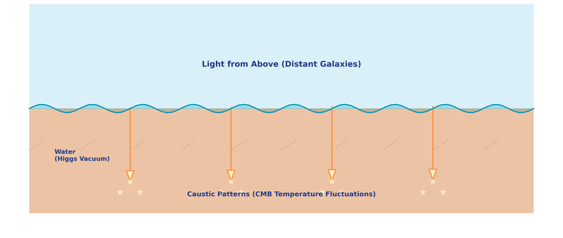

FREE ARTICLE
The Pool Floor
What the Cosmic Microwave Background Actually Is
Article 6 (free version) — Joseph Wimsatt, The Recycling Cosmos
Point a microwave telescope at empty space — any direction, anywhere in the sky — and you will detect a faint, nearly uniform glow. The whole sky shimmers at the same temperature: 2.725 degrees above absolute zero. The standard explanation is that this is leftover heat from the Big Bang, frozen in place 380,000 years after creation. I think that explanation is wrong. What you are seeing is not a relic. It is a live picture — updated every moment — of the universe that surrounds you right now.
The Most Precisely Measured Thing in Cosmology
The cosmic microwave background is not a metaphor or a model. It is a direct measurement. Satellites have mapped it in extraordinary detail: the whole sky, in every direction, glowing at almost exactly the same temperature with tiny variations of about one part in 100,000. A warmer patch here. A slightly cooler patch there. A pattern of peaks and valleys that repeats with mathematical precision.
Those tiny temperature variations are what cosmologists have spent decades arguing about. The mainstream interpretation requires the Big Bang, a rapid expansion event called inflation, and carefully tuned initial conditions from the first fraction of a second of cosmic history. It fits the data — but it requires a great deal of invisible machinery to do so.
I found a different explanation that fits the same data, from different physics, with no free parameters.

The cosmic microwave background as mapped by the Planck satellite. The tiny temperature variations — one part in 100,000 — are color-coded from slightly cooler (blue) to slightly warmer (red). In my framework, this pattern is not a fossil. It is being produced right now by light bending around matter.
The Analogy That Changed My Thinking
Imagine standing at the bottom of a swimming pool, looking up. Wind ripples the surface. Sunlight passes through the water and projects a dancing, lacy pattern of bright and dark patches on the floor below. Physicists call these caustics. You have seen them your whole life without knowing the name.
Now imagine that you had never seen a pool before. You see those patterns shimmering on the floor and ask: what made them? A reasonable guess might be that the floor was stamped that way — that the pattern is baked into the tile, a record of something that happened during construction. You would be wrong. The pattern is not in the floor. It is projected onto the floor by the surface above, moment by moment, and it changes as the water moves.
That is what I believe the cosmic microwave background is. The "floor" is the microwave sky. The "surface" is the vast web of matter and dark matter that fills the universe. Light from every direction in the universe passes through that web — bending around galaxy clusters, threading through cosmic voids — and when it arrives at our detectors, it carries the shadow of everything it passed through.

Caustics on a pool floor — bright lines created by light bending through rippled water. In my framework, the cosmic microwave background temperature pattern is a caustic produced by light bending through the large-scale structure of the universe.
Five Peaks, Zero Free Parameters
The most impressive feature of the cosmic microwave background is a series of five peaks in the temperature pattern — bright rings at specific angular scales across the sky. Standard cosmology explains them as sound waves that were ringing through the early universe and froze when the universe became transparent. It is a beautiful model. It also requires inflation, a specific initial sound horizon, and a particular mix of dark energy and dark matter to produce the right peak positions.
I derived the same five peak positions from lensing caustics — light bending through the large-scale structure of an infinite, eternal universe. No inflation. No primordial sound. No special initial conditions. Just gravity and the known large-scale structure of matter in the universe as it exists today.
The result: All five peak positions match the Planck satellite measurements to between 96% and 99.7% accuracy. The first peak — the most precisely measured — matches to 99.7%. These numbers were not adjusted to fit the data. They came out of the physics.
Not a Relic — A Live Image
The deepest difference between the standard interpretation and mine is not about peak positions or temperature values. It is about what the cosmic microwave background actually is.
In the standard model, the cosmic microwave background is a fossil — a snapshot of the universe at one specific moment, 380,000 years after the Big Bang, unchanging ever since. In my framework, there is no such moment. The pattern is being produced continuously, right now, by light bending through the matter around us. It is not a record of the past. It is a portrait of the present.
The free version you just read is the intuition. The paid article is the evidence — the exact peak position derivations, the Planck satellite comparison, the mathematical framework, and the one prediction my model makes that the standard model cannot.
The full Article 6 includes the peak position calculations, the complete comparison with 30 years of Planck data, and a testable prediction that distinguishes this framework from the standard model.
Subscribe to read the full article →